共有したいインスタンスを登録し、必要な場所から型で取得します。
| 項目 | 内容 |
|---|---|
| namespace | SymphonyFrameWork.System.ServiceLocate |
| 主な公開型 | ServiceLocator / ServiceInjector / ServiceLocateComponent / IInjectable / LocateTypeEnum / ServiceRegistrationInfo |
| メニューパス | Window > SymphonyFrameWork > Symphony Administrator の Service Locate パネル |
| 設定の保存先 | UserSettings/SymphonyFrameWork/SymphonyUserSettingConfig.asset（Service Locatorのログ設定） |
using SymphonyFrameWork.System.ServiceLocate;
using UnityEngine;
public sealed class GameSession : MonoBehaviour
{
private void OnEnable()
{
ServiceLocator.RegisterInstance(this, LocateTypeEnum.Locator);
}
private void OnDisable()
{
ServiceLocator.UnregisterInstance(this);
}
}GameSession session = ServiceLocator.GetRequiredInstance<GameSession>();
GameSession awaited = await ServiceLocator.GetInstanceAsync<GameSession>(
grace: 10,
token: destroyCancellationToken);Locatorは参照だけを登録し、SingletonはComponentを永続管理オブジェクト配下へ移動します。GameObjectへServiceLocateComponentを追加してInspectorから登録することもできます。
通常のRegisterInstanceが型重複でfalseを返した場合、渡した候補の所有権は呼び出し側に残ります。重複した新規候補を以後使わず、自動的にDisposeまたはGameObject破棄してよい場合だけ、所有権移譲を明示するRegisterInstanceWithAutoDisposeを使います。
ServiceLocator.RegisterInstanceWithAutoDispose(
newSession,
LocateTypeEnum.Singleton);登録中の型、payload、登録方式を一覧で診断する場合は、取得時点の不変なServiceRegistrationInfoを使います。既知の型だけを調べる場合はTryGetRegistrationInfoを使えます。
foreach (ServiceRegistrationInfo registration
in ServiceLocator.GetRegistrationInfos())
{
Debug.Log(
$"{registration.ServiceType.Name}: {registration.LocateType}");
}シーンロード時の自動注入にはIInjectable<T...>、実行時に生成したオブジェクトへの手動注入にはServiceInjector.Inject(...)を使います。
OnEnableでRegisterInstance、OnDisableでUnregisterInstance。UnregisterInstance、DestroyInstance、IsExistInstance、GetInstance、TryGetInstance、GetRegistrationInfos、TryGetRegistrationInfo）は、Play Mode終了でLocatorが解放された後でも安全なno-opとしてfalse／null／空一覧を返す。OnDestroyやOnDisableで初期化状態を確認する必要はない。登録（RegisterInstance系）、GetRequiredInstance、待機（GetInstanceAsync、TryGetInstanceAsync、RegisterAfterLocate）は未初期化でSymphonyNotInitializedExceptionを投げる。RegisterInstanceがfalseの場合も候補の所有権は呼び出し側に残る。型重複時に候補を自動解放してよい場合だけRegisterInstanceWithAutoDisposeへ所有権を移す。LocateTypeEnum.Locatorは参照だけを登録する。LocateTypeEnum.SingletonはComponentを管理オブジェクト配下へ移動するため、シーンローカルなオブジェクトには使わない。TryGetInstance<T>、nullを許容する既存コードはGetInstance<T>、必須依存はGetRequiredInstance<T>を使う。GetRegistrationInfos()、既知の型だけを調べる場合はTryGetRegistrationInfo(Type, out ...)を使う。返るServiceRegistrationInfoは取得時点のスナップショットとして扱う。GetInstanceAsync<T>の期限超過はTimeoutException、呼び出し側キャンセルはOperationCanceledException。TryGetInstanceAsync<T>がfalseへ変換するのは期限超過だけ。SceneLoaderが自動注入するのはロードしたシーンのルートにあるIInjectable<T...>。実行時InstantiateしたオブジェクトにはServiceInjector.Inject(...)を手動で呼ぶ。入口: Window > SymphonyFrameWork > Symphony Administrator
| パネル | 内容 |
|---|---|
| Service Locate | 登録済みインスタンスの一覧と登録状態 |
Play Mode中のみ内容を持ちます。Edit Modeでは未接続状態を表示します。
入口: Project Settings > SymphonyFrameWork
| 項目 | 内容 |
|---|---|
| Set Instance | インスタンスの登録ログを出力するか |
| Get Instance | インスタンスの取得ログを出力するか |
| Destroy Instance | インスタンスの破棄ログを出力するか |
保存先: UserSettings/SymphonyFrameWork/SymphonyUserSettingConfig.asset
注意点:
UserSettings/ は開発者ごとの設定です。版管理へ含めないでください。 他の開発者のログ設定を上書きします。Service LocateのRuntime内部では、登録Command、読み取り変換、表示状態、Unity所有処理を分離しています。

ServiceLocateQueryだけがRegistry／Entityを読み取り、利用側にはServiceRegistrationInfo、Viewには内部Dtoを返します。ServiceLocateWindowはViewModelを購読し、登録状態が変わったときだけ再描画します。
通常登録が型重複で失敗しても候補payloadを解放しません。RegisterInstanceWithAutoDisposeを選んだ場合だけ、失敗した候補をServiceHostComponentがIDisposableまたはComponentとして解放します。RegistryとEntityはUnity APIを参照しません。
この文書は Assets/SymphonyFrameWork/Documentation~/Modules/ServiceLocator.md から生成しています。編集は正本のMarkdownへ行ってください。